Once you have soldered on your shorting link, you may slice through the flex-cable with a sharp knife. Two small screws must then be removed on the little metal mount for the diode, and then it can be eased out (still attached to the mounting bracket/heatsink).
If you wish the diode can be removed from its mount, by carefully prying it off with a craft knife. The remaining glue will have to then be removed.
And here it is:
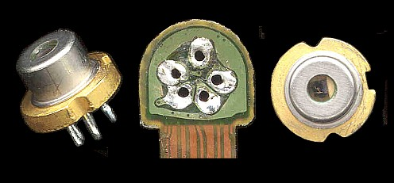
(Click on photo for closeup.)
This shows two views of the laser diode can along with the PCB that would normally attach via the flex-cable to the driver circuitry. Note the 5 legs on the laser diode can and five corresponding holes in the PCB. If the soldermask gets damaged on the ground plane on the PCB, there will very likely be solder shorts when you attempt to attach your ultra-fine wires! Carefully inspect your soldering before applying power!
The pinout for the PS3 diode is shown below (looking at the rear of the can).
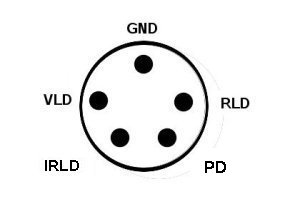
Pinout:
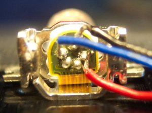
This is a close-up of the connections on my unit. (Note the remaining section of flex-cable PCB.)
Now typical violet laser diodes, according to whatever spec sheets you get your hands on, run from anywhere between 4.5 and 5.5 V, and 35 to 90 mA!
For Example Nichia diode NDHV310APB:
| Item | Symbol | Min | Typ | Max | Unit |
| Optical output | Po | - | 30 | - | mW |
| Peak wavelength | λp | 400 | 408 | 415 | nm |
| Threshold current | Ith | - | 45 | 60 | mA |
| Operating current | Iop | - | 70 | 90 | mA |
| Slope Efficiency | η | 0.7 | 1.2 | 1.6 | W/A |
| Operating voltage | Vop | - | 4.5 | 5.5 | V |
| FWHM
beam divergence slow axis |
θ | 5 | 8 | 13 | ° |
| FWHM beam divergence fast axis |
θ | 18 | 24 | 30 | ° |
| Monitor current | Im | 0.1 | 0.25 | 0.6 | mA |
This is one of Nichia's higher powered diodes (the one in the PlayStation-3 outputs 20 mW max). Note the variation in Ith of anywhere between 45 and 60 mA! And Iop of 70 to 90 mA! These specs, while not applicable to the PS3 diode, are important, as they give an idea as to the properties and variations in specification of Gallium Nitride laser diodes, i.e., once I work out Ith for my device, I can extrapolate Iop to within reasonable limits. So I read every 405 nm diode datasheet I could get my hands on!
A series of tests were conducted on the Violet laser diode and the following parameters were determined. (these are a guide only, and are the specs for my particular diode, your Ith may vary, and as a consequence, your operating current will vary!)
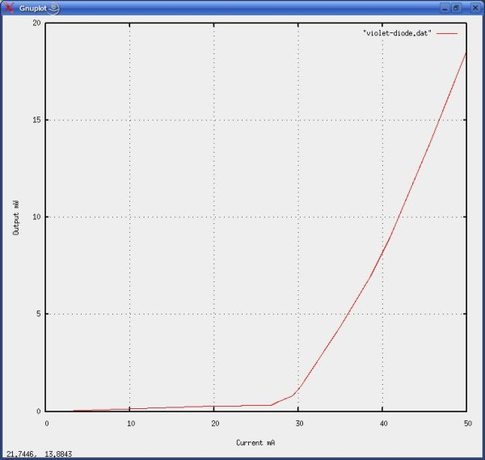
The above graph is a plot of diode current, against optical output, and was measured using a Coherent Lasercheck As can be seen on the graph, threshold (Ith) occurs at 28 mA to 30 mA.
Note: On this graph, the final real measurement was made at 45.7 mA (13.9 mW). The line from 45.7 mA to 50 mA is extrapolated.
Sam ran some tests of the infra-red, red, and violet laser diodes, and the monitor photo diode using a laboratory laser diode controller, the LDX LDC 3900. The results are summarised here:
| Diode | Ith | Iop(5 mW) | Ipd (5 mW |
| Infra red ~780 nm | 26 mA | 34 mA | 485 uA |
| Visible Red ~660 nm | 22 mA | 29 mA | 355 uA |
| Violet ~405 nm | 35 mA | 49 mA | 115 uA |
Note the high Ith and Iop of the violet diode, as I stated, this had been ESD damaged, and thus had poor beam quality, and reduced output power. However, this at least gives us an indication of the response of the photodiode.
To determine Ith, hook up the diode to your supply set at 0 mA (remember to have discharged you caps first!) Place a white card in front of the laser (the fluorescence will help determine the threshold). Gradually increase the current. Early on (possibly starting even at a fraction of 1 mA!!) there will be considerable violet emission, this is LED emission, and the device is not yet lasing, and will appear quite violet on the card. Once the diode reaches the lasing threshold, the light emitted will no longer be a diffuse circle but will take the form of a blue (because of fluorescence) bar, with various lines around the edges, and speckle should be noticeable. It will be quite dim at threshold, so keep a keen eye out.
Once you have determined Ith, make a note. Your maximum operating current (Iop) is around Ith+10 mA. So if Ith=28 mA, your maximum current ought to be 38 mA.
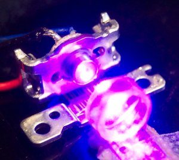
In the above picture the laser and its little mount were just glued to the large heatsink, no heat transfer compound was used. (The heatsink was used because it was convenient.) I figured there was enough metal in the mount to dissipate any heat. The laser stayed cool throughout its operation. In the above picture, a common acrylic asphere lens was used as the collimator. It was just glued to a PCB and focus was adjusted by moving the PCB either towards or away from the diode.
The diode can is standard 5.6 mm diameter, and could be easily integrated into the collimating assembly of a dead red module. A far superior method of mounting is to obtain a decent red laser pointer, and remove the collimator from it (the good ones are made of brass, and are adjustable). It is then a matter of simply installing the diode, where the red one was, and adjusting the focus to suit.
The raw output beam, before collimation is very ugly, and appears very multimode:
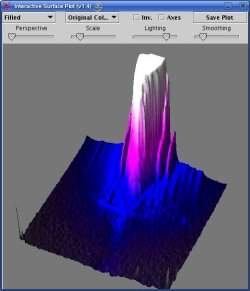
The above image, was recorded by a digital camera and processed with ImajeJ. The satellite beams and other garbage can be quite easily seen.
As far as I can tell the diode is unsuitable for holography, although I have never tried it. The output is quite noisy, and appears multimode, but the use of laser diodes for holography has been proven before! It was once suggested that the coherence lengths of red laser diodes was sub-millimeter, but has been proven to surpass the coherence length of even the best gas lasers on the market! At some point I will measure the coherence length and post it here. I would imagine that as the technology progresses, we could reasonably expect to see single mode violet diodes on the market within 18 months.
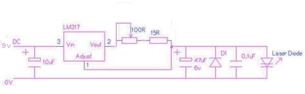
It is a simple current regulator based on the LM317, and is easy to build,
and can be made quite compact.
There will shortly be a circuit diagram available with light feedback
and the capability of running all three diodes, so watch this space!
The patent for the stacked laser diode structure can be seen at:
This particular design shows a four pin can, since the photodiode is not present. (Sony was only patenting the stacked structure).
Since I can't really show the diagrams from the patent without copyright infringement, I have displayed some photographs of the diode structure below. These were kindly sent in to the site by John Rehwinkel (www.vitriol.com) whose violet diode can be seen in his Journal..
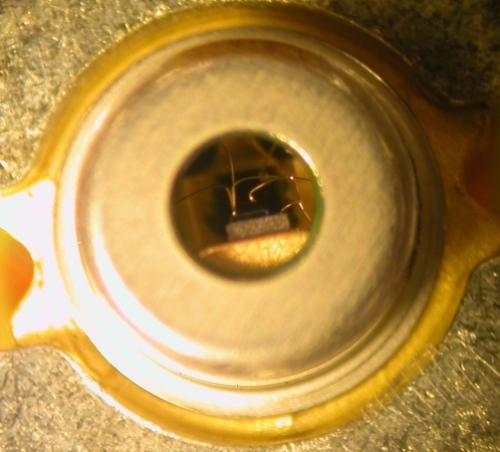
Here is a close-up of the front of the diode. You can see the multiple connections to the device.
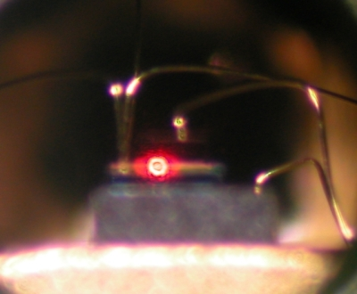
Here is the diode with the red emitter powered.
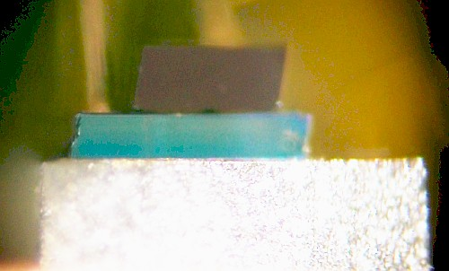
And a close-up of the facets. The large, rhomboid structure sits on top of the Red and Infra-red diodes (which are very small!) The large slab on the bottom, is GaN. note the fracture on the left corner of the GaN slab.
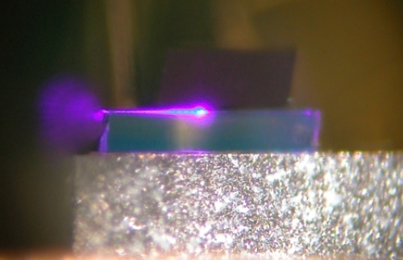
This is a photo of the violet diode powered. Note the amount of light leaking from the left of the structure, where the afore mentioned fracture is. Although you should note that some light leaks out of all of the facets of the GaN die.